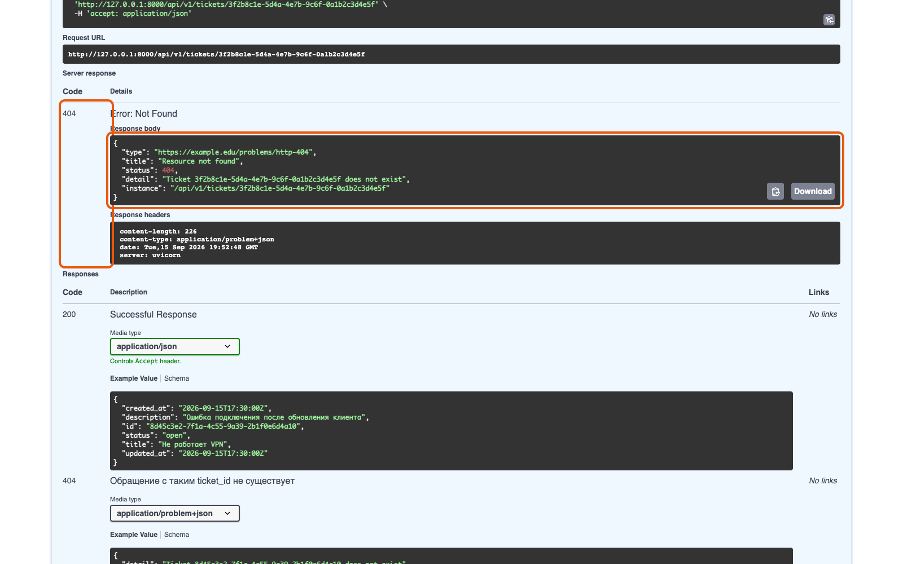

Справочник «Стандартизация HTTP API» · модуль 4 · Ошибки и устойчивость
Глава 4.2
Диагностика
ответа
У неудачного запроса всегда есть код состояния, тело ошибки и заголовки; по ним и определяют причину. В этой главе разобран порядок проверок, восемь частых кодов и способ найти конкретный запрос в журнале сервера.
- Категория
- Ошибки
- Уровень
- Базовый
- Связанные главы
- 4.1 Problem Details · 2.3 Коды ответов · 4.3 Заголовки контракта
- Зачем это знать
- Чтобы находить причину самому, а не писать «у вас API сломался»
§1Посмотреть весь ответ, а не тело
При разборе смотрят на весь ответ, а не только на тело: часть сведений передаётся строкой состояния и заголовками. В терминале их показывает ключ -i:
curl -i http://127.0.0.1:8000/api/v1/tickets/00000000-0000-0000-0000-000000000000
HTTP/1.1 404 Not Found
x-request-id: 3f1c8a77-0a16-4e18-9a3b-9e33c0b7b6a1
content-type: application/problem+json
{
"type": "https://…/problems/http-404",
"title": "Resource not found",
"status": 404,
"detail": "Ticket 00000000-0000-0000-0000-000000000000 does not exist",
"instance": "/api/v1/tickets/00000000-0000-0000-0000-000000000000"
}content-type подсказывает формат тела, x-request-id — ключ к журналу, retry-after и x-ratelimit-* объясняют отказ по нагрузке.контекстТе же три части видны в Swagger UI после кнопки Execute, и это удобнее, когда терминала под рукой нет.

404 в интерфейсе. Код слева, тело в формате Problem Details под ним, заголовки — ниже. Тот же набор сведений, что даёт curl -i.§2Первая развилка: чья ошибка
Первая цифра кода отвечает на главный вопрос разбора — где чинить.
Сервис работает правильно и отказывает осознанно: не тот адрес, нет токена, тело не подходит под схему, превышен лимит. Повтор того же запроса даст тот же ответ.
Запрос мог быть верным, но обработать его не удалось. Повтор иногда помогает, но это не решение: причина на стороне сервиса, и её разбирают по журналу.
От этого различия зависит, кому заводить задачу. При коде 422 в теле ответа уже указано, какое поле не подошло, поэтому обращаться с таким ответом к команде API не нужно.
§3401 и 403: доступ
Оба кода относятся к доступу, но означают разное. По ним клиент решает, что показать пользователю, поэтому различать их обязательно.
- токен не передан
- токен просрочен или испорчен
- что делать: получить токен и повторить
- интерфейс: показать вход
- токен верный
- прав на эту операцию нет
- что делать: повтор не поможет
- интерфейс: сообщить об отсутствии прав
curl -i -X POST http://127.0.0.1:8000/api/v1/tickets \ -H 'Content-Type: application/json' -d '{"title":"Проверка"}' # -> 401 "Provide a valid Bearer token in the Authorization header" curl -i -X POST http://127.0.0.1:8000/api/v1/tickets \ -H 'Authorization: Bearer viewer-token' \ -H 'Content-Type: application/json' -d '{"title":"Проверка"}' # -> 403 "This token can only read tickets"
Признак, по которому их различают в чужом API: если после получения нового токена ответ не изменился — это 403 по сути, даже если сервис возвращает 401. Такое встречается, и тогда в свой стандарт записывают правило различать коды явно.
§4404 и 405: адрес и метод
Код 404 сам по себе двусмыслен: по нему не видно, отсутствует адрес или ресурс по этому адресу. Различает эти случаи поле detail.
| Что видно | Что произошло | Что проверить |
|---|---|---|
detail: "Ticket … does not exist" | Адрес верный, ресурса с таким идентификатором нет | Идентификатор; возможно, ресурс удалён |
detail: "Not Found" | Такого адреса в API нет | Префикс /api/v1, опечатку в имени коллекции |
| HTML вместо JSON | Ответил не сервис, а что-то перед ним | Порт, адрес сервера, обратный прокси |
Код 405 Method Not Allowed однозначен: адрес существует, но этот метод к нему неприменим. По стандарту вместе с ним обязателен заголовок Allow со списком доступных методов — по нему сразу видно, чем заменить.
HTTP/1.1 405 Method Not Allowed allow: GET content-type: application/problem+json
В этом ответе перечислен только GET, хотя у адреса есть ещё PATCH и DELETE: так их считает библиотека, на которой построен сервис. Полный список методов всегда есть в описании OpenAPI, поэтому сверяться нужно с ним.
Частая причина 405 — попытка отправить PUT туда, где реализован только PATCH, или POST на адрес элемента вместо адреса коллекции. Разницу между этими адресами разбирали в главе 1.3.
§5415 и 422: формат и содержание
Тело запроса проверяется в три этапа, и стандарт разрешает отвечать на них разными кодами: 415 Unsupported Media Type — не тот Content-Type, 400 Bad Request — текст не является JSON, 422 — JSON разобран, но не подходит под схему.
Разрешает, но не обязывает. Учебный сервис на все три случая отвечает 422, а различает их поле errors. Вот три настоящих ответа на три разных запроса:
"errors": [{"loc": ["body"], "msg": "Input should be a valid dictionary or object to extract fields from", "type": "model_attributes_type"}]
"errors": [{"loc": ["body", "9"], "msg": "JSON decode error", "type": "json_invalid"}]
"errors": [ {"loc": ["body", "title"], "msg": "String should have at least 3 characters", "type": "string_too_short"}, {"loc": ["body", "priority"], "msg": "Extra inputs are not permitted", "type": "extra_forbidden"} ]
Читается это так. Первый: прислана форма, а ожидался объект. Второй: разбор JSON споткнулся на девятом символе. Третий: поле title короче трёх символов, и вдобавок прислано поле priority, которого в контракте нет, — почти всегда это опечатка в имени поля или код клиента, написанный под другую версию контракта.
Частая причина первого случая — запрос из терминала без заголовка. curl с ключом -d ставит application/x-www-form-urlencoded, а не JSON. Заголовок -H 'Content-Type: application/json' нужно указывать явно.
Один код на три случая проще для клиента, но менее точен: отличить «не тот формат» от «не та схема» можно только заглянув в errors. Если такая точность нужна, различие кодов прописывают в правилах проекта и добавляют обработчик. Главное — чтобы выбранное поведение было записано в описании и одинаково работало во всех операциях.
§6429 и 5xx: нагрузка и сбой
Код 429 Too Many Requests означает, что сервис ограничивает частоту запросов. Ответ сообщает, сколько ждать; повторять запрос раньше этого срока бесполезно.
HTTP/1.1 429
retry-after: 60
x-ratelimit-limit: 2
x-ratelimit-remaining: 0
x-ratelimit-reset: 60
content-type: application/problem+json
{
"type": "https://…/problems/http-429",
"title": "Too many requests",
"status": 429,
"detail": "Write limit of 2 requests per minute exceeded",
"instance": "/api/v1/tickets"
}Здесь всё сказано числами: предел — 2 запроса, осталось 0, окно закроется через 60 секунд. Клиент, который читает эти заголовки, ждёт указанное время; клиент, который их не читает, продолжит получать тот же ответ. Заголовки лимитов разбираются в главе 4.3.
С кодами 5xx порядок разбора другой. Тело такой ошибки намеренно не содержит подробностей, поэтому разбор идёт не по ответу, а по журналу сервера.
| Код | Что обычно значит | Помогает ли повтор |
|---|---|---|
500 | Необработанное исключение в сервисе | Нет, пока не исправят |
502 | Прокси не получил ответа от сервиса | Иногда: сервис мог перезапускаться |
503 | Сервис временно недоступен, часто с Retry-After | Да, после указанной паузы |
504 | Ответ не успел прийти за отведённое время | Осторожно: операция могла выполниться |
Истёкшее время ожидания не означает, что запрос не выполнен: ответ мог потеряться уже после записи. Повторять POST вслепую здесь опасно — появится дубль. Именно для этого случая существует Idempotency-Key из главы 4.3.
§7Когда ответа нет вовсе
Отдельный класс случаев: кода состояния нет, потому что ответа не было. Тогда разбор идёт не по HTTP, а по сети.
| Что видно | Причина | Что делать |
|---|---|---|
Connection refused | По этому адресу и порту никто не слушает | Проверить, запущен ли сервис и тот ли порт |
| Запрос висит и обрывается | Адрес недоступен, мешает сеть или фильтр | Проверить адрес хоста, доступность сети |
| В браузере CORS-ошибка в консоли | Сервис не разрешил запрос с этого источника | Настройка CORS на сервере, см. главу 4.3 |
| Ответ пришёл, но заголовков не видно | Браузер скрывает заголовки, не перечисленные в expose_headers | Добавить нужные заголовки в настройку CORS |
В последних двух случаях запрос из терминала проходит, а со страницы — нет. Поэтому, разбирая чужую жалобу, уточняйте, откуда отправлялся запрос: из curl или из браузера.
§8Найти запрос в журнале
Каждый ответ учебного сервиса несёт заголовок X-Request-Id. Это ключ, по которому конкретный запрос находится в журнале сервера — среди тысяч похожих.
x-request-id: 8952af24-1c19-4801-8f28-181a89f6265f
grep 8952af24-1c19-4801-8f28-181a89f6265f uvicorn.log
Клиент может прислать свой идентификатор — тогда сервис его сохранит и вернёт обратно. В захваченном ответе учебного сервиса это видно прямо:
HTTP/1.1 200
etag: "4fec2a976840743a"
x-request-id: support-case-1842Так поступает служба поддержки: в идентификатор ставится номер обращения, и запрос конкретного пользователя находится в журнале по номеру его заявки. Подробности — в главе 4.3.
Метод и полный адрес, код ответа, тело Problem Details и значение X-Request-Id. Этих четырёх строк хватает, чтобы разбор начался сразу, без переписки «а что именно вы отправляли».
§9Порядок проверок целиком
- Повторите запрос с
-i. Нужен весь ответ: код, заголовки, тело. - Посмотрите на первую цифру кода.
4xx— разбираетесь сами,5xx— идёте к команде сервиса сX-Request-Id. - Прочитайте
detailиerrors. В большинстве случаев причина написана прямо там. - Откройте адрес из поля
type. На странице вида проблемы написано, что делать. - Сверьтесь с описанием операции в Swagger UI: тот ли метод, тот ли адрес, те ли обязательные поля.
- Выполните ту же операцию через Swagger UI. Если там получается, дело в вашем запросе, а не в сервисе.
- Только теперь заводите задачу — с четырьмя строками из §8.
§10Частые ошибки
Retry-After, Allow, X-Request-Id часто содержат ответ целиком.429 — но и его повторяют не сразу, а после указанной паузы.Idempotency-Key.§11Проверьте себя
- По какому признаку решают, кому заводить задачу — себе или команде сервиса?
- Клиент получил
401, обновил токен и получил401снова. О чём это говорит? - Какие три проверки проходит тело запроса и каким кодом учебный сервис отвечает на каждую? Как отличить случаи друг от друга?
- Что обязательно должно быть в ответе
405, кроме кода? - Почему после
504опасно повторятьPOSTи что решает эту задачу? - В терминале запрос проходит, а на странице — нет. Где искать причину?
curl -iкод + заголовки + тело4xx — чинит клиент5xx — чинит сервер401 / 403404 / 405422: формат / схемаметод и адрескод ответатело Problem DetailsX-Request-IdСправочник «Стандартизация HTTP API» · модуль 4 · глава 4.2Макаров Максим Николаевич